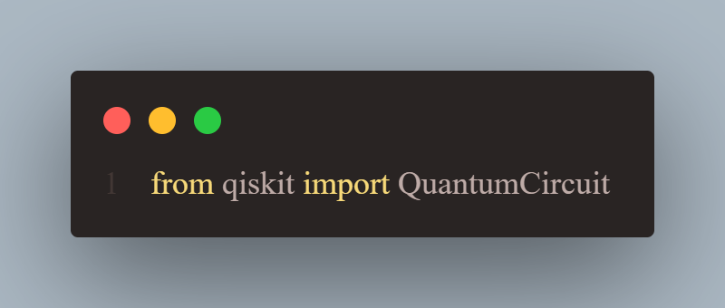
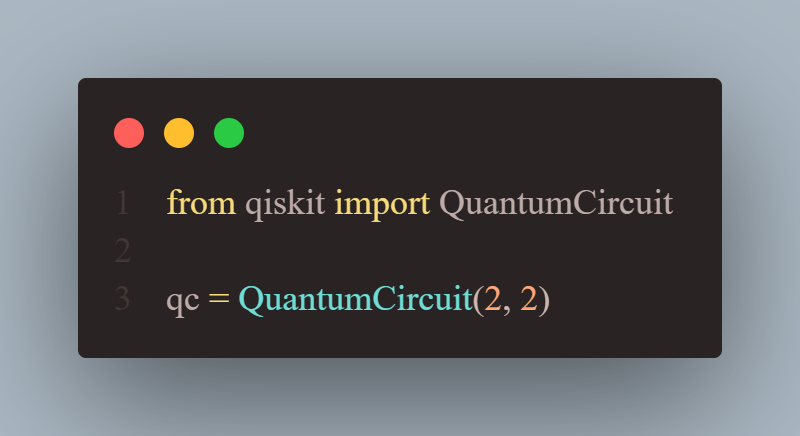
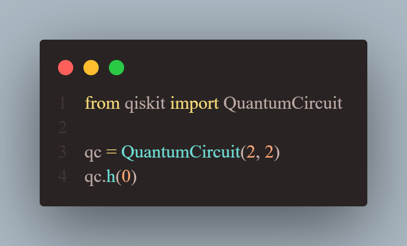
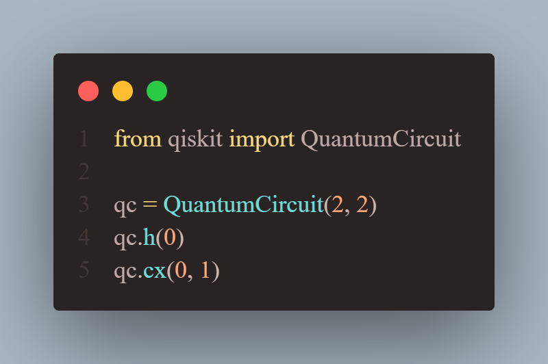
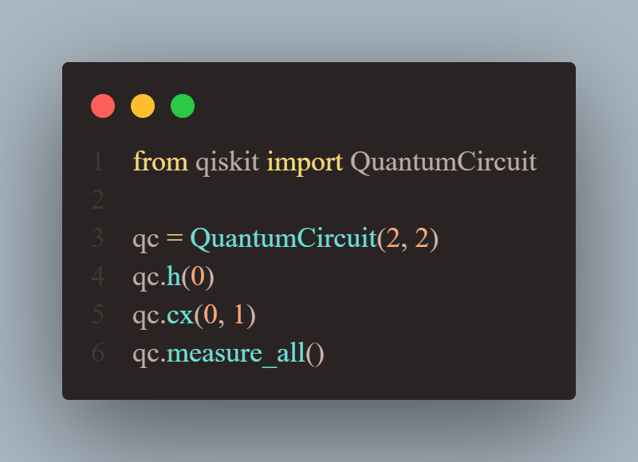

Os computadores quânticos são máquinas que precisam de menos espaço e energia do que supercomputadores. Um sistema de hardware quântico tem aproximadamente o tamanho de um carro, composto principalmente por sistemas de resfriamento para manter o computador em temperaturas extremamente baixas. Superfluidos: os processadores quânticos operam em temperaturas extremamente baixas, cerca de um centésimo de grau acima do zero absoluto. Para isso, utiliza-se de superfluidos em superfusão para criar supercondutores. Supercondutores: Nessas temperaturas ultrabaixas, parte dos materiais do processador deixam de oferecer resistência, fazendo os elétrons se moverem mais rapidamente. Isso os torna “supercondutores”. Quando os elétrons passam pelos supercondutores, eles se emparelham, formando "pares de Cooper". Esses pares podem transportar uma carga através de barreiras, ou isolantes, por meio de um processo conhecido como tunelamento quântico. Dois supercondutores colocados em cada lado de uma barreira isolante formam uma junção Josephson Controle: Os computadores quânticos usam junções Josephson como qubits supercondutores. Quando disparados os fótons de micro-ondas nesses qubits, pode-se alterar seus comportamentos. Sobreposição: O qubit tem uma função muito importante: transformar a informação quântica por ele em um estado de superposição, que representa uma combinação de todas as configurações possíveis de um qubit. Grupos de qubits em sobreposição podem criar espaços computacionais complexos e multidimensionais. Entrelaçamento: O entrelaçamento é um efeito da mecânica quântica que correlaciona o comportamento de dois objetos distintos. Quando dois qubits estão entrelaçados, as mudanças em um qubit afetam o outro diretamente.
Desenvolvida pela IBM, Qiskit Quantum SDK é um conjunto completo de recursos que simulam a computação quântica. Qiskit é baseada em python.
Para começar, vamos importar um “QuantumCircut” da biblioteca Qiskit.
Agora vamos criar um circuito quântico com dois registradores quânticos e dois registradores clássicos:
Os registradores quânticos são utilizados para computação quântica e os registradores clássicos guardam os resultados medidos (“measured results”)
O próximo passo vamos utilizar duas portas:
A porta Hadamard coloca o qubit no estado de sobreposição entre 0 e 1. Isso significa que tem uma chance igual de ser medido (“measured”) 0 ou 1.
A porta não é constituída de dois qubits, o qubit de controle (“control qubit”) e o qubit de objetivo (“target qubit”) . Sua lógica é fácil de entender, se o “control qubit” for “0” o seu estado irá mudar para o “target qubit”, ou seja, “1”.
Agora os qubits estão fortemente correlacionados, isto é, estão emaranhados. Então o último passo que precisamos fazer é as medidas (“measurements”) para conseguir todas as saídas, e para isso nós chamamos a função “measure_all”.
Agora se rodar esse código algumas vezes em um computador quântico você perceberá que 50% dos outputs serão 00 e 50% serão 11, mas nunca serão 01 ou 10. Os 50/50 do primeiro qubit vem da sobreposição e enquanto não mudamos explicitamente o estado do segundo qubit ele será alterado de qualquer forma porque está emaranhado com o primeiro qubit então ele muda com o primeiro qubit.